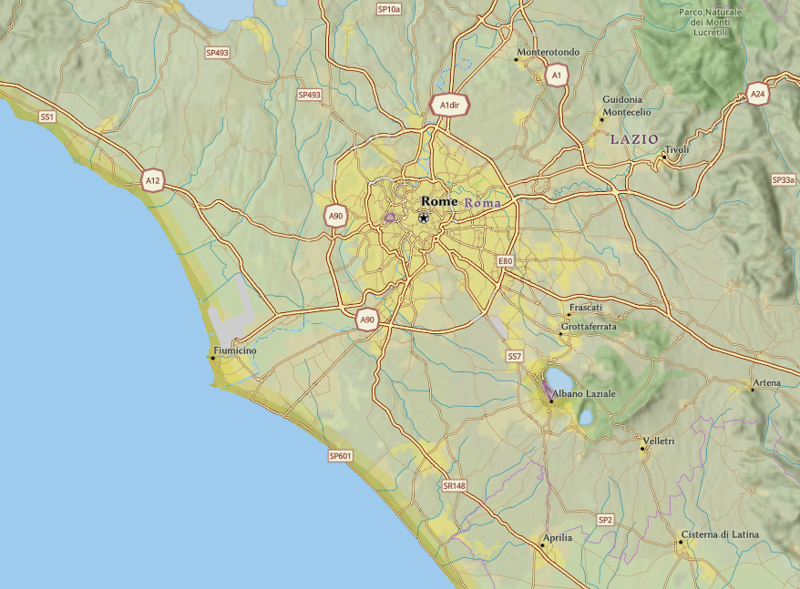

Tag, Tag, Tag, Tag
The Third Servile War, fought between 73 and 71 BCE, was the last and most significant of the three major slave uprisings against the Roman Republic. It is best known for the leadership of Spartacus, a Thracian gladiator who led tens of thousands of slaves and disenfranchised individuals in a desperate bid for freedom. The conflict exposed deep divisions within Roman society and shook the foundations of its social and military order.
The war began in 73 BCE when Spartacus and around 70 other gladiators escaped from a training school in Capua. Armed initially with kitchen utensils and makeshift weapons, they seized wagons of gladiatorial gear and defeated Roman forces sent to capture them. The rebels retreated to Mount Vesuvius, where they attracted thousands of runaway slaves, shepherds, and discontented peasants.
What began as a local uprising quickly escalated into a full-scale rebellion. Spartacus proved to be a brilliant and charismatic leader. Alongside fellow leaders like Crixus and Oenomaus, he organized a disciplined and mobile army that repeatedly outmaneuvered Roman forces. Their victories embarrassed the Roman Senate and revealed weaknesses in the Republic’s internal military responses.
Spartacus’ goals remain debated by historians. Some believe he intended to march his followers northward to cross the Alps and disperse, while others think he aimed to challenge Roman power directly. His forces defeated several Roman consuls and even raided southern Italy, demonstrating growing confidence and capabilities.
Rome, alarmed by the rebellion’s scale, eventually gave command to Marcus Licinius Crassus, a wealthy patrician who had political ambitions. Crassus imposed strict discipline on his legions, including the rare and brutal practice of decimation to punish cowardice. He began a campaign to trap Spartacus in the south by fortifying the isthmus of Rhegium.
Spartacus attempted to break out by negotiating with pirates for transport to Sicily but was betrayed. Surrounded and cut off, his army was gradually worn down. In 71 BCE, the final confrontation occurred in Lucania. Spartacus reportedly fought bravely and died in battle, although his body was never conclusively identified.
The Roman response to the rebellion’s end was ruthless. Crassus crucified over 6,000 captured rebels along the Appian Way between Capua and Rome, sending a stark message to any who might defy Roman authority. These mass executions also served to reinforce the social order and deter future revolts.
While the rebellion failed, its legacy endured. Spartacus became a symbol of resistance against oppression, celebrated in later centuries by revolutionaries, abolitionists, and political theorists. His fight for freedom and dignity in the face of overwhelming power has inspired countless books, films, and artworks.
Politically, the war elevated Crassus’ stature, though it also contributed to tensions with Pompey, who claimed credit for mopping up fleeing rebels. Both men leveraged their military success to gain consulship in 70 BCE, signaling the growing role of military force in Roman politics—a trend that would eventually lead to the fall of the Republic.
The Third Servile War remains a stark reminder of the cruelty of Rome’s slave-based economy and the potential for rebellion among the oppressed. While Spartacus’ army was ultimately crushed, the war revealed deep social fractures and foreshadowed greater upheavals in the century to come.